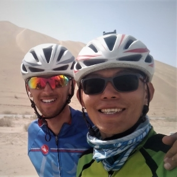

Pheng Taing
Well hello there, let me introduce myself quickly...
2001 Originally from Cambodia, my family moved to Auckland, New Zealand when I was ten. 2012 Graduated university with a Bachelor’s degree in Computer Science, grade point average of A.
2014 I moved to the south of New Zealand and worked as a teacher assistant at the Southern Institute of Technology. 2016 Opportunity in Christchurch presented itself so I moved there to work full time in software development. 2018 My partner and I embarked on a cycling trip from China to Portugal. It took 22 months and we covered 22,000 kilometers (14,000 miles). 95% of it was on our bicycles. Find more stats on our travelling blog.

2019 Arrived in London, bicycles intact and spirit high! Settling down in London for new career opportunities.Skills
Front-End Programming (JavaScript, Java, C#), spoken languages (Mandarin, French, German and Khmer). Framework experience in Angular and Ember.js. Currently taking online courses for User Experience and Design.
Based on the success of my recent cycle trip, I demonstrated skills such as project management, planning, attention to detail and behavioural skills like perseverance, resilience, and adaptability.
It was a real life challenge to follow this goal and it was achieved through meticulous planning, being highly adaptable to changes, demonstrating perseverance through thick and thin. There's more about my skills on LinkedIn.
Interests
At home you'll find me cooking and baking, if my current home has a backyard, I'll be getting my green fingers dirty.
When I'm away from home, it'll be travelling somewhere so I can practice foreign languages, tour cycling between towns, or hiking some hills.
@latest
Pedco, the blog
After completing my 2 years trip, my partner and I had accumulated plenty of travel materials, tons of cycling metrics and stories. Naturally, I made a travel blog with Angular and hosted it on Github Pages. "Pedco" is short for @pedallingcontinent (our "unofficial" Instagram travel brand).
Pedco - everything about our recent trip
Pedalling Continents Blog Quiz
Once the travel stopped and the world went into lockdown, it became difficult to create content for our social media followers. Using random photos from the travel that weren't good enough to be featured, I upcycled them into a series of pop quizzes using Instagram's Story platform. It got quite popular. The quiz was active for 24 hours and I shared the answers the next day, every weekend until the lockdown ended. A total of seven sets were made for different portions of the trip. Why not test yourself?
Pedalling Continents Blog Quiz - Think you know everything about our trip?
Coding Competition
At work, we had monthly coding competitions and I submitted a few entries. The theme is in bold and my submission is linked:
- Algorithm Visualisation: Taste the Rainbow
- What Does the Red Button Do?: Banana TV
- Tickle my Funny Bone: Boouhh-hoouh
- Text Effect: Pheeengle Search
- Rotation: Pull the Blind
- Sound: Wombo Audio
Kudos
London, UK (2020)
The pandemic forced everyone to work from home where possible. This meant that social interaction between my colleagues at IG was significantly reduced. I never thought I could work from home. Was there any choice in this unprecedented time?
To foster a supportive and praising working environment, I created an app within the Microsoft Teams messaging app called Kudos. The Power App connected with ease to the workplace's existing chatting channels and team information infrastructure. When someone wants to acknowledge and thank another member, they can raise a kudos on the app, which then gets shared to the entire team.
Additional features I have added to increase awesomeness, business/management appeal and competitiveness:
- Personalised recorded gif of ourselves clapping in the shared team channel,
- Each recorded kudos can be associated with some of the company's core values,
- "Team Kudos" is a leaderboard showing the tally of kudos and IG's core values that each member has received,
- In our fortnightly retro we dedicate time to look back at the kudos raised, and every alternate retro, the member at the top of the leaderboard wins a Managers Recognition award.
Kudos - Good job for doing that thing you did.
Exam Generator
Invercargill, NZ (2015)
When I was the teaching assistant at the IT department of the Southern Institute of Technology, I saw the opportunity to automate the process of producing multi-choice exam papers. There weren't many options available that suited my need, so instead, I created one that was easy to use and format. The final product was a Java-based application which took in a text file for input and outputted HTML files (the Questions and Answers) which can then be printed. If you are sick of randomising test questions and want it done automatically with only a few clicks, give Exam Generator a try!
Karaoke
Auckland, NZ (2014)
During my university study, I studied Mandarin and German on the side with my Computer Science degree. I wanted to create something that will put all my newly acquired skills together. I made a website using JavaScript, jQuery and various other shared libraries. This personal project challenged my design skills which I had always wanted to work on. The end result included plenty of UI controls that improved the user's experience. Keyboard shortcuts, visual aids (animation on buttons, tooltips), and multimedia controls (sound and video). Select a popular Mandarin song and start singing!

Java Games
Auckland, NZ (2011-14)
After completing my first assignment developing a game using basic GUI components freshly taught in class, I really enjoyed creating applications from all sorts of inspiration and ideas. Each one were documented and added to my previous portfolio which was hosted on Google Sites. Check out this extensive list to see some examples of my (fairly beginner material) Java works. Watch the YouTube videos for some of the applications. Some examples of my work...